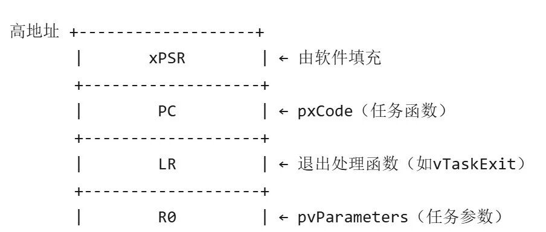

Freertos移植层（port.c) 核心代码解析
Freertos移植层核心代码解析：
port.c
port.c顾名思义是移植层面的代码部分，主要有以下几个部分：
1.声明
将内核中systemtick和Pendsv优先级设置的最低"：
oSsysTick 低优先级避免抢占用户中断
oPpendSV 低优先级确保所有中断完成后才切换任务，防止上下文保存不完整
// 默认使用内核时钟// 选择内核时钟源// 使用外部时钟设置时钟源将nvic和systick定义成宏
2.Initstack->svc->systemtick和Pendsv

初始化一个任务栈并将寄存器的东西存进去（伪造现场），要伪造所有的寄存器，以便svc恢复
注：lr储存函数返回地址，把lr复制到pc中再bx lr就能恢复执行函数了。
3.configASSERT是标注断言错误的全局变量
报错会陷入死循环，关闭中断，等待用户处理
4.svc异常处理
a.和pendsv不同，svc一般用于第一个任务的执行，且高优先级，立马执行，它会读pcb，将栈里的东西恢复到寄存器，从 pxCurrentTCB 获取任务栈指针。
b.恢复 R4-R11（Callee-saved 寄存器）。
ldmia r0!, {r4-r11}c.通过 PSP 和 LR 配置实现任务模式切换。
__asm void vPortSVCHandler(void) {ldr r3, =pxCurrentTCB // 获取当前任务TCB指针ldr r1, [r3] // 加载TCB地址ldr r0, [r1] // 获取任务栈顶指针ldmia r0!, {r4-r11} // 恢复寄存器R4-R11msr psp, r0 // 设置进程栈指针（PSP）isb //指令同步屏障mov r0,msr basepri, r0orr r14,bx r14// 跳转到任务代码}
5.pendsv和systic


（1）. xPortPendSVHandler（PendSV 异常处理）
功能
在 PendSV 异常中完成 任务上下文切换，保存当前任务的寄存器到其栈中，并从新任务的栈恢复寄存器。
逐行解析
mrs r0, psp // 获取当前任务的栈指针（PSP）isb // 指令同步屏障（确保指令顺序）ldr r3, =pxCurrentTCB // 加载当前任务TCB的地址ldr r2, [r3] // 获取当前TCB指针（指向任务栈顶）
·保存当前任务上下文：
stmdb r0!, {r4-r11} // 将寄存器R4-R11压入当前任务栈（DB表示递减存储）str r0, [r2] // 更新TCB中的栈顶指针（保存后的位置）
·调用调度器选择新任务：
stmdb sp!, {r3, r14} // 保存R3和LR到主栈（MSP），防止被调度器破坏mov r0,msr basepri, r0 // 屏蔽高优先级中断（进入临界区）bl vTaskSwitchContext // 调用调度器选择新任务mov r0,msr basepri, r0 // 解除中断屏蔽ldmia sp!, {r3, r14} // 恢复R3和LR
TCB 指针写入 pxCurrentTCB。(这时必须关闭中断）·加载新任务上下文：
ldr r1, [r3] // 获取新任务的TCB指针ldr r0, [r1] // 获取新任务的栈顶指针ldmia r0!, {r4-r11} // 从新任务栈弹出R4-R11msr psp, r0 // 更新PSP为新任务的栈指针bx r14 // 异常返回，跳转到新任务
关键点
·硬件自动保存：进入PendSV时，Cortex-M 已自动将 xPSR、PC、LR、R0-R3、R12 压入任务栈。
·手动保存/恢复：需手动处理 R4-R11（Callee-saved 寄存器）。
·原子性保护：切换过程中通过 BASEPRI 屏蔽中断，防止上下文被破坏。

（2）. xPortSysTickHandler（SysTick 中断处理）
功能
SysTick 定时器中断（如每1ms触发一次），推动时间片轮转调度，必要时触发 PendSV 切换任务。
逐行解析
vPortRaiseBASEPRI(); // 临时屏蔽高优先级中断（等效于临界区）if (xTaskIncrementTick() != pdFALSE) {portNVIC_INT_CTRL_REG= portNVIC_PENDSVSET_BIT;// 触发PendSV异常}vPortClearBASEPRIFromISR(); // 解除中断屏蔽
关键逻辑
1.更新时间片计数器：
xTaskIncrementTick() 更新系统时钟，检查是否有任务需要唤醒（如延时结束）。
2.触发任务切换的条件：
·当前任务的时间片用完（同优先级任务轮转）。
·更高优先级任务就绪（抢占调度）。
3.延迟切换机制：
不直接切换任务，而是挂起 PendSV，让中断快速退出，由 PendSV 在安全时机执行实际切换。
6.临界区的进入与退出
void vPortEnterCritical( void ){portDISABLE_INTERRUPTS();uxCriticalNesting++;if(uxCriticalNesting == 1 ){configASSERT(( portNVIC_INT_CTRL_REG & portVECTACTIVE_MASK ) == 0 );///断言检查}}
/*-----------------------------------------------------------*/
void vPortExitCritical( void ){configASSERT(uxCriticalNesting );//断言uxCriticalNesting--;if(uxCriticalNesting == 0 ){portENABLE_INTERRUPTS();}//使能中断}
进入时，信号量++，退出时，信号量--。
注意：进出要关中断，同时要检查断言，避免信号量错误（为负数）
Port.c总结
port.c 是 FreeRTOS 在 特定硬件平台（如 ARM Cortex-M）上的底层移植层（Port Layer），负责实现与硬件直接相关的关键操作，为操作系统核心提供硬件抽象支持。它是 FreeRTOS 能够正确运行在目标芯片上的基石，移植时只需适配此文件
核心职责:
(1) 任务调度与上下文切换
·任务栈初始化（pxPortInitialiseStack）
为每个任务构造初始栈帧，模拟中断触发时的上下文（如 PC、LR、xPSR、寄存器等），确保任务首次被调度时能正确启动。
·上下文切换（xPortPendSVHandler）
通过 PendSV 异常 实现任务切换：
a.保存当前任务的寄存器（R4-R11）到其栈中。
b.从新任务的栈恢复寄存器，更新 PSP（进程栈指针）。
·启动第一个任务（prvStartFirstTask）
通过 SVC 异常 从内核模式切换到第一个任务的上下文。
(2) 中断与异常管理
·SysTick 中断配置（vPortSetupTimerInterrupt）
初始化 SysTick 定时器，为系统提供时间基准（如 1ms 心跳），驱动任务时间片轮转。
·中断优先级配置
a.设置 PendSV 和 SysTick 为 最低优先级，确保它们不会抢占用户中断。
b.通过 BASEPRI 寄存器实现临界区保护（屏蔽部分中断）。
(3) 临界区保护
·开关中断（vPortEnterCritical / vPortExitCritical）
通过 BASEPRI 寄存器屏蔽/恢复中断，保护共享资源（嵌套安全）。
a.断言检查确保临界区未被错误使用（如中断中调用非 FromISR API）。
(4) 调度器启动与控制
·调度器初始化（xPortStartScheduler）
a.配置 SysTick 和 PendSV。
b.启动第一个任务（通过 SVC）。
c.若调度器启动失败，死循环（for(;;)）。
关键硬件依赖
(1) ARM Cortex-M 特性利用
·异常机制：
a.SVC 用于启动第一个任务（特权模式切换）。
b.PendSV 用于延迟的上下文切换（最低优先级）。
c.SysTick 提供系统时钟。
·寄存器操作：
a.MSP（主栈指针）和 PSP（进程栈指针）分离。
b.BASEPRI 屏蔽中断优先级。
c.NVIC（嵌套向量中断控制器）管理中断优先级。
(2) 硬件原子性保障
·指令屏障（DSB/ISB）：
确保指令执行顺序，避免流水线乱序引发竞态条件。
·栈对齐（PRESERVE8）：
满足 Cortex-M 的 8 字节栈对齐要求。
与 FreeRTOS 内核的协作
port.c 功能 | FreeRTOS 内核依赖 |
任务栈初始化 | 创建任务时调用（xTaskCreate） |
PendSV 切换任务 | 调度器（vTaskSwitchContext） |
SysTick 中断 | 时间片轮转（xTaskIncrementTick） |
临界区保护 | 保护任务队列、信号量等共享资源 |